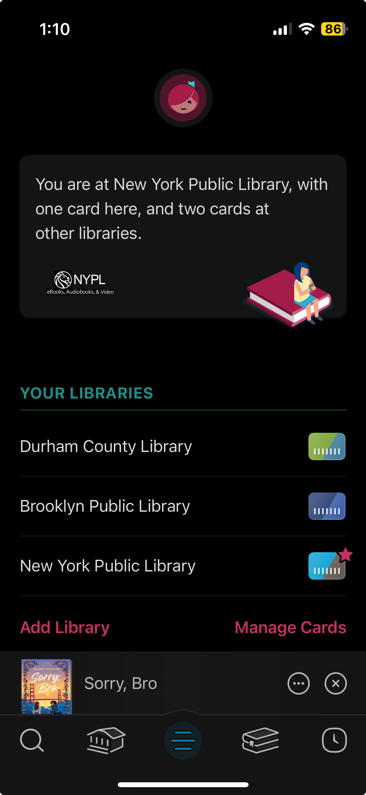
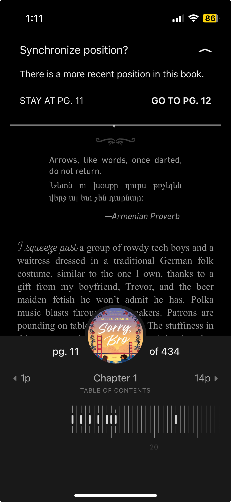
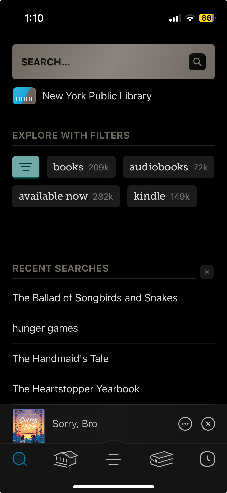
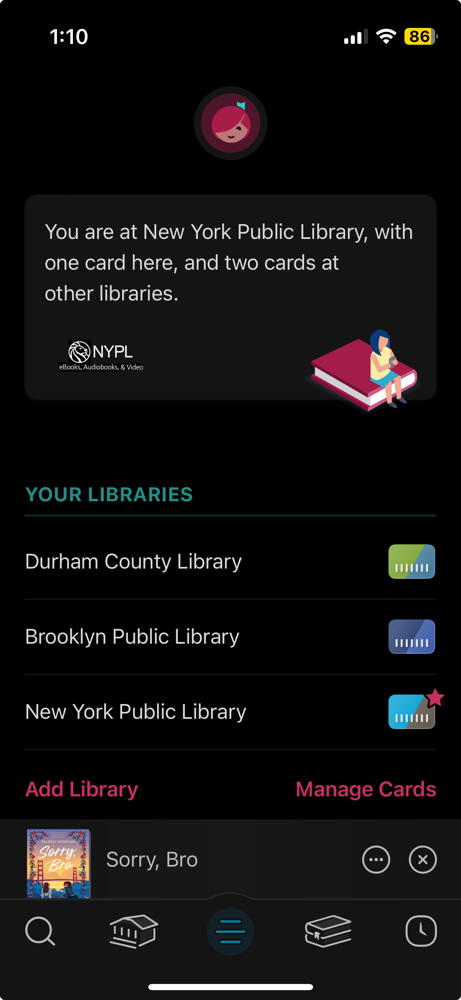
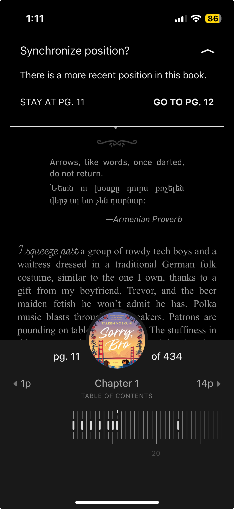
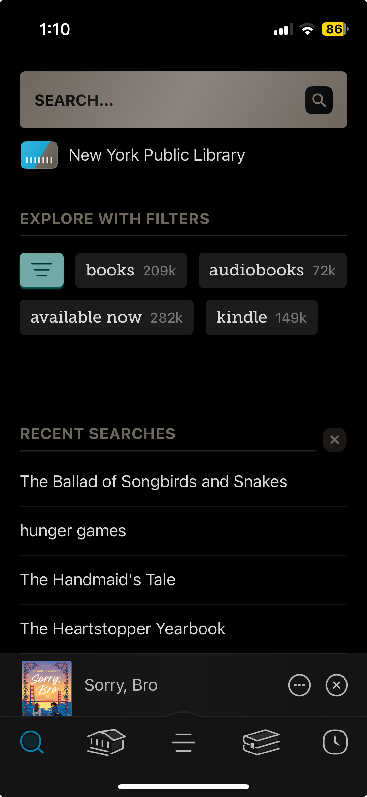

Libby is an app created by OverDrive, and connects patrons with their libraries in order to make finding, borrowing, and accessing digital content easier. Libby's lending policies and borrowing policies differ based off of the library that the patron is accessing Libby from.
Testing for Accessibility:
We explored different accessibility features and applied filters to determine the how accessible the software is.
Libby's app both features many accessibility options yet forgoes others. The home page of the app, when run through the Web Accessibility Evaluation Tool (WAVE), notes that there are instances of no alt text, extremely small text, and lack of heading structure and other structural elements.
Through a desktop view, there is no way to change the color scheme to one other than the default dark mode, and there are no options for text size as well. However, once a title is borrowed and the built-in e-book reader function opens, many options for accessibility opens up. Users are able to change the color scheme from three different options- dark, light, and sepia. Text size is also fully customizable with a large range of options. Users are able to change the font, line spacing, and text weight of their book, including several preset options. One of these preset options is labeled as OpenDyslexic, which utilizes the OpenDyslexic font in combination with generous line spacing in order to create a more readable experience for dyslexic people.
Libby also includes additional accessibility options such as color variation reduction, text variation reduction, motion reduction, and vibration reduction. When run through a color filter, the high contrast nature of Libby's design leads to easily readable text with red/green filters, blue/yellow filters, and grayscale filters.
Reviewing UI:
Reviewing aesthetic and graphic choices for consistently designed user interface.
Note: this portion of usability testing was conducted by a member of the team who accessed the app in their capacity as a Jersey City Free Public Library cardholder.
Font: The app uses a variety of legible fonts, for example, using different fonts for headings, and filter options.
Use of Graphics: App pages such as the settings page, feature book or swirling line graphics. The apps’ main navigational menu graphics are not necessarily visually communicative. For example, users may not interpret 3 horizontal lines to mean “settings”. However, the graphics are specific to the app’s function; for example, a stack of books graphic indicates borrowers’ virtual shelves.The app also uses an appealing library card graphic in borrowers card management page, and across the app, as another point of entry to books’ borrowing pages. The app also features a libby icon on users’ settings pages which is customizable; users can adjust the icon’s skin tone by clicking on it.
Consistency of Design: The app consistently uses right arrows or colored text to indicate when collection titles are links. Item collection pages have an identical interface layout for borrowing options, across all types of items, (magazines, audiobooks, and ebooks), although corresponding text differs. The app consistently uses the back arrow to indicate exiting a page, along with the page title to which the user will be redirected. The app does not require swiping to the side to see carousels of additional content- rather, clickable links to full collection pages are provided.
Use of Color: The app uses green and magenta highlights for content, in addition to black and white. The app also incorporates the colors of the library through which a user is borrowing to its interface; for example, Jersey City Free Public Library users see certain pages in blue and yellow. The menu navigation icons also change to color from black and white, when a page is selected.
Additional Comments: Book cover images, and other image content consistently load correctly and rapidly. The apps browsing page displays book covers both as selections of 6 titles, and in a chevron pattern, as opposed to in a long list of multiple carousels. Libby also allows users to hide specific collections that they do not want to see from their browsing homepage, and provides clear instructions for how to restore them, if accidentally removed, or if users change their mind. The app often provides written explanations for users of various terms, such as the “skip the line” feature, and how to explore using filters on first use.
Overall Impressions: Libby’s user interface is easily customizable in settings, and also uses color, graphics, and varying means of arranging content, in a manner which uniquely identifies the app from other content tools such as social media, and provides a visually dynamic experience. Subjectively, the app’s user interface strikes an effective balance between being usable, and displaying content in a simple and straightforward manner, and being visually appealing.
Reviewing UX:
Reviewing the user experience of the software and the design decisions that contributed.
Evaluating the UX design for usability of Libby for this study specifically includes analyzing the product’s information architecture and navigation design.
Information Architecture (IA): The information architecture of a product focuses on organizing, structuring, and labeling content in an affective manner. Libby’s IA is well organized and structured in some ways. The product functions are separated into 5 main pages - a browsing/searching page, a library-specific page, a settings and customer service page, a shelf for current reading, and a history of previously borrowed. The icons are understandable upon further thought, but not intuitive and do not follow familiar patterns for users. All landing pages are structured well, with consistent design of materials and their details, titles and links are well defined and stand-out on the interface. However, there is an overwhelming amount of information and options presented on sub-pages, when going deeper into functions and their user flows. Since Libby is such a diverse product in terms for services offered, as well as the ability to use multiple library cards simultaneously, there is a tremendous amount of information and options offered to users past the landing pages. These are structured poorly, requiring extra time and effort on behalf of the user to understand content.
Navigation Design: Navigation design of a product refers to the design of its user flows for different functions, and how navigable users find the product to perform them. For Libby, the navigation of basic menu options is easy enough, but becomes complicated farther into task flows. Due to a large amount of information presented to the users, navigability is affected, fracturing user flows, since users have to spend longer parsing through information on screen. Additionally, many nested functions pop-up at the bottom on a sliding screen. While this is useful for sub-functions, it eclipses the main navigation menu, potentially confusing users. Some user flows are not intuitive and increase user effort. This also means familiarity to such applications and long-term use improve user experience, but may overwhelm new users.However, it is important to notice that the user flows have multiple starting points, and are interlinked well within the product, providing many pathways to each functions if needed.
Overall Impressions: If one is familiar with e-book readers and similar applications, Libby is likely to give them a wonderful user experience. It is why Libby is a favorite for digital book-worms. However, it is important to recognize that the interface and UX design can be overwhelming for new and unfamiliar users due to the large amount of functions Libby can perform. There seems to be a learning curve to understand the application functions, and needs memorizing of user flows to use the application effectively. Leaning towards familiar use patterns and intuitive functionality might be helpful to improve user experiences.
Testing Across Devices:
Understanding how the software design is impacted when viewing on different devices such as mobile, tablet, or desktop.
Libby can work seamlessly across mobile, tablet, and desktop. While the mobile and tablet use applications to load Libby, the desktop uses a custom designed webpage. Libby was clearly created as a mobile-first product, because the user interface seen in mobile is scaled and applied to the other two devices.
The mobile and tablet are practically the same in terms of user experience, however the tablet gives a larger space for browsing data, as well as more flexibility in display and reading features. The desktop web-based version of Libby is interesting, however, because it reads more like an application than a website. All application feature are scaled up in size and the interface is easy to navigate. However, the website is clunky and moves sluggishly as opposed to its application counterparts. However, all three are well designed for responsiveness and use on its respective devices.
Content Acquisition & Digital Rights Management:
Libby's title availability is based off of the library card that the user has in their possession. While some libraries offer the ability to find titles that aren't in their collection and request that they be added, many libraries do not. As a subsidiary of Overdrive, Libby's collection also depends on their availability through Overdrive. Overdrive grants users a limited, revocable, non-exclusive, non-transferable non-commercial personal license to their content. Users may copy, transfer, and burn content for non-commercial personal use, but cannot redistribute, resell, or download content to public terminals. Overdrive purchases digital distribution rights from publishers, and then sells lending rights to libraries. Due to these lending rights have expiration dates, they are generally more expensive than print books.
Translation & Non-English Language Use:
Evaluation of translation and app usability in languages other than English
Note: This evaluation was conducted by a French-speaking member of the team, using e-book accounts to which they have access as a member of the Jersey City Free Public Library
Is it clear how to change language settings in the app? Yes - a specific setting is listed.
Is it possible to change language settings in the app, and if so, how? When using an iPhone, the app’s setting provides a link to in-app phone language settings in iOS, which can be used to solely translate Libby content, and not all phone apps. When the default language on a phone is changed, the language settings for the app are also automatically changed to the phone’s default.
If a user’s phone has a default language other than English, will the text in the application’s interface be consistently written in the language of their choice? No - see next question.
Are all sections of the application’s content, including text for buttons or imported headings translated? Many of the collection headings, and key navigation buttons on Libby were translated. However, content which was likely imported to the app and written by librarians or book publishers, such as collection titles curated by Jersey City librarians, or book descriptions were not translated. Additionally, understandably, book cover images, and text content within banners, such as an image advertising overdrive’s documentary streaming tool Kanopy, were not translated.
Does viewing the app in a language other than English impact the layout of the app’s user interface? No, the app’s user interface successfully adapts to accommodate longer and shorter text strings while still being visually consistent and appealing.
Are there foreign-language options for content in the app? (Note: the number of resources available on the e-reader applications surveyed is in part dependent on the library’s overall collection policies). Yes, but the number of non-English e-book items available in the collection through libby was limited using the tested account. For example, when accessed with a Jersey City Free Public Library card, 2 French-language e-books were available, although there were also 166 magazines available. In contrast, there are over 12,000 english-language ebooks, and ~570 Spanish-language ebooks available in Libby, when accessed using a JCFLP library card.
Does searching for content in the application, actually yield options in the user’s language of choice? Yes! When searching by both subject terms or keywords, and popular author names in the language-of-choice, it was possible to find content in the sought language. Notably, however, given collection limits at the tester’s library, the search actually showed content to which the library does not have access as part of its collection within Libby. Helpfully, however, the app provided an option to sign up for an alert if a specific book is added to the collection.
Overall Impressions: Overall the quality of the app’s translation is not evenly applied or consistent across the interface, most often showing issues for collection titles contained within links, or when text is included within images designed exclusively for English-speaking users. In particular, Libby’s collection of non-English language resources for users is particularly dependent on the budgetary constraints and collection policies of the library through which users have access. However, Libby’s search tool and filters, ease of use, make it easy for users to browse the entirety of their library’s in-app collection of language-of-choice materials, as a simple filter can be easily applied in the app’s search tool. Additionally, the app very successfully yields results which reflect the language and cultural context in which a user conducts their search. Further testing by users or librarians speaking additional languages could provide a more holistic assessment of the app’s use for distinct populations.
Ease of Use:
Analyzing the ease of use of the software by conducting a set of specific tasks outlined below
Browse, select a book, and borrow it: It is easy to explore possible options using filtered search and the homepage. The app helpfully notes when books are part of a series, and their installment in the series. It is also possible to read samples of the books in the app, and create tags for interesting potential reads. When borrowing, it is easy to find information about how to manage loans and the length of time a book will be borrowed for. When exploring books, in a category or using a filtered search, it is possible to click into a book and easily return to the full search list. The reading with kindle or read on option provided was somewhat confusing as a reader. It is possible to read books marked as “read on kindle” in the libby app, but this was not apparent.
Make a bookmark: Within book pages, there are clear instructions for making a bookmark. Bookmarks and highlights are stored in a distinct section of the book feature menu.
Close the app and return to the same page in a book: When returning to the app after closing it, a bar to return to the book appears at the bottom of the screen. It is also easy to navigate back into the book from the book-shelf menu. The book options to the last-read page. It is also possible to search the text using a keyword to find a specific part.
Try to find the app’s borrowing limit, and max it out: The app displays users’ borrowing limits within the your libraries card information page within settings. This information may be difficult to find while browsing through additional materials. When the borrowing limit is maxed out, the app displays a clear message about the borrowing limit and provides instructions on returning materials before borrowing something new.
Return a Book: It is easy to return materials early through each borrowed books’ managed loan menu. Materials will also automatically return on their due date. It is not possible to renew materials early, however the app provides guidance on the timeframe when a material can be renewed.
Examine your data from previous borrowing and delete it: Libby’s menu contains a specific timeline page containing borrowing data. It is possible to delete this data for individual books, although this must be done by swiping left on the materials, which is not explained or made obvious. There is also an option in the actions menu to delete all borrowing activity, and disable borrowing tracking. Libby also has a beta “Recover Card history” option which poses potential privacy issues.


 




